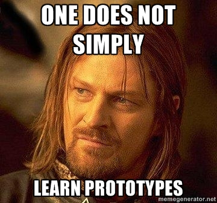

JavaScript
The Real Bad Parts
By @johnkpaul
johnkpaul.com/2013/html5devconf
Rate My Talk
What's bad but not so bad?
from Bad Parts: Appendix B - JavaScript: The Good Parts
- with
- eval
- void
- type coersion
- continue/switch
How often do these issues come up?
how many with bugs have you wrangled?
The real bad parts
- difficult concepts to grasp in the language
- high blog post to understanding ratio
- can't explain them easily

5 different ways to set this
- "method" call
- baseless function call
- using call
- using apply
- constructor with new
- => fat arrow
"method" call
1. var obj = {
2. fullName: "John K. Paul",
3. alertName: function(greeting){
4. alert(greeting + " " + this.fullName);
5. }
6. };
7.
8. obj.alertName("Hey"); // Hey John K. Paul
baseless function call
1. var obj = {
2. fullName: "John K. Paul",
3. alertName: function(greeting){
4. alert(greeting + " " + this.fullName);
5. }
6. };
7.
8. var alertName = obj.alertName;
10. alertName("Hey"); // Hey undefined
11. // this is set to the global object unless in strict mode
using call
1. var obj = {
2. fullName: "John K. Paul",
3. alertName: function(greeting){
4. alert(greeting + " " + this.fullName);
5. }
6. };
7.
8. var alertName = obj.alertName;
10. var newContext = {
11. fullName: "John Doe"
12. };
13. alertName.call(newContext, "Hey"); // Hey John Doe
using apply
1. var obj = {
2. fullName: "John K. Paul",
3. alertName: function(greeting){
4. alert(greeting + " " + this.fullName);
5. }
6. };
7.
8. var alertName = obj.alertName;
10. var newContext = {
11. fullName: "John Doe"
12. };
13. alertName.apply(newContext, ["Hey"]); // Hey John Doe
constructor with new
1. var Foo = function(){
2. this.sayHey = function(){
3. alert("Hey");
4. }
5. }
6.
7. //this is a newly created object
8. var newObject = new Foo();
10. newObject.sayHey() // Hey
Fat Arrow =>
In ES6
1. // with fat arrow inner function
2. var myObj = {
3. longOuter: function() {
4. console.log(this); // this is myObj
5. var fatInner = () =>
6. console.log(this); // this is also myObj
7. fatInner();
8. }
10.}
11.
12.myObj.longOuter();
What on earth is prototypal inheritance
WAT
from howtonode.org
What is inheritance...really?
Is it classes?
Is it blueprints?
Is it super?
No, none of these
Code Reuse
This is what we really care about
Write code once, use in multiple situations
prototypal inheritance makes this easy
don't think about new, super, and extends
don't even think about JavaScript's prototype property
Prototypal inheritance is about fallbacks
How does prototypal inheritance work?
1. var base = {
2. firstName: "John",
3. lastName: "Paul",
4. getFullName: function(){
5. return this.firstName + " " + this.lastName;
6. },
7. }; // base is the fallback
8.
9. // where the magic happens
10. var obj = Object.create(base);
11. obj.alertName = function(){
12. alert(this.getFullName());
13. };
14.
15. obj.alertName(); // John Paul
16.
17. // this is code reuse!
18. alert("getFullName" in obj) //true
19. alert(obj.getFullName === base.getFullName) //true
Caveat
Not all js environments have Object.create
But we have a solution for < IE9
1. Object.closeToCreate = function (o) {
2. function F() {}
3. F.prototype = o;
4. return new F();
5. };
What does new do?
- setup fallback with function's prototype property
- run the constructor function with the new object as
this
1. //GROSS OVERSIMPLIFICATION
2. function myNew(constructorFunc){
3. var obj = Object.create(constructorFunc.prototype);
4. constructorFunc.call(obj);
5. return obj;
6. }
7.
8. function Foo(){}
9. Foo.prototype.sayHey = function(){ alert("Hey"); };
10. var foo = myNew(Foo);
11. foo.sayHey();
prototype is double speak
- prototype #1 - property on a function
fallbackOfObjectsCreatedWithNewwould be better- prototype #2 - internal reference of every object
- ES6 now calls this dunderproto (__proto__)
Scoping: breaking the principle of least surprise
1. var arr = [1,2,3];
2. var out = [];
3. for(var i = 0; i<arr.length;i++) {
4. var item = arr[i];
5. out.push(function(){ alert(item); });
6. }
7.
8. out.forEach(function(func){ func(); });
Only functions can create scope
1. var arr = [1,2,3];
2. var out = [];
3. for(var i = 0; i<arr.length;i++) {
4. (function(valueToAlert){
5. var item = valueToAlert;
6. out.push(function(){ alert(item); });
7. })(arr[i]);
8. }
9.
10. out.forEach(function(func){ func(); });
- Coffeescript has
dokeyword
ES6 adds let
1. var arr = [1,2,3];
2. var out = [];
3. for(var i = 0; i<arr.length;i++) {
4. let item = arr[i]; // block scoped
5. out.push(function(){ alert(item); });
6. }
7.
8. out.forEach(function(func){ func(); });
one of these is not like the other
1. testFunc();
2. var testFunc = function(){ alert("hey!"); };
1. testFunc();
2. (function testFunc(){ alert("hey!"); });
1. testFunc();
2. function testFunc(){ alert("hey!"); };
How does hoisting work?
1. (function(){
2. var hello = "world";
3. //some other code
4. var expression = function(){ alert("expression!"); };
5. var foo = "bar";
6. function declaration(){ alert("declaration!"); };
7. })();
1. (function(){
2. var foo, hello, expression;
3. function declaration(){ alert("declaration!"); };
4. hello = "world";
5. //some other code
6. expression = function(){ alert("expression!"); };
7. foo = "bar";
8. })();
1. function declaration(){} // hoisted
2.
3. (function expression(){
4. function declaration(){} // hoisted
5. }())
6.
7. var expression = function(){}; // not hoisted
8.
10. var expression = function expression(){}; // not hoisted
11.
12. (function expression(){})(); // not hoisted
13.
14. new function expression(){}; // not hoisted
15.
16. 0, function expression(){}; // not hoisted
17.
18. void function expression(){} // not hoisted
19. +function expression(){} // not hoisted
Only easy rule - if there's no name, it's a expression
Takeaways
- USE JSHINT
thiscan be set in56 different ways- prototypal inheritance is based on fallbacks
- only a function can define a new scope (until let)
- hoisting acts as if source code moves around before interpretation
- function expressions and function declarations can be distinguished
- ES 6 will make all of our lives easier in approximately 8 years
- depending on who you ask